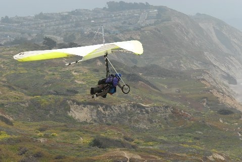

We are pleased to announce that as of March, 2006, tandem flying at Fort Funston is allowed for pilots with the proper qualifications and equipment.
The summary is this: Our GGNRA Special Use Permit has been modified to allow tandem flights by USHPA Tandem pilots (T-1 and Tandem Instructor) with Fort Funston flying experience and safe equipment in good condition. We've created a Fort Funston Tandem Director position to ensure that everyone and their gear meet the specified requirements. All tandem pilots must be checked out by the Funston Tandem Director at the beginning of each year before being allowed to fly tandem.
If you want to get approved to fly tandem at the Fort, have a look at the below rules and get in touch with the Fellow Feathers Tandem Director (click here.)
Please note: The Fellow Feathers Special Use Permit from the GGNRA specifically states “Commercial tandem flights or instruction are strictly prohibited.”. Under our permit, remuneration or compensation of any kind may NOT be requested, offered, or accepted. Violation of our SUP may result in loss of tandem and other flying privileges.
The complete Fort Funston Tandem rules.
